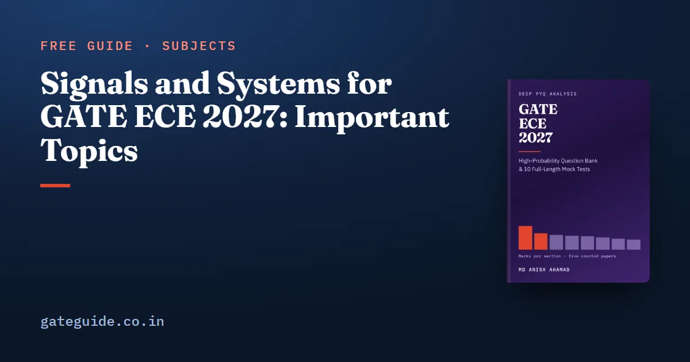

Signals and Systems for GATE ECE 2027: Important Topics

Signals and systems is not a section of its own in the GATE EC paper. It is the larger half of Section 2, Networks, Signals and Systems, and on the five papers counted question by question for this site (2010, 2019, 2020, 2025 and 2026) it took 52 of that section's 85 marks, in 34 questions. That is 10.4 marks a paper, more than Communications, Digital Circuits, Electronic Devices, Control Systems or Electromagnetics average as whole sections.
In this guide
This guide covers only that half: LTI systems, continuous-time signals and discrete-time signals. Circuit analysis, phasors and two-port networks are the other half and are not repeated here.
Key takeaways
- Signals-side marks by year: 13 (2010), 9 (2019), 10 (2020), 7 (2025), 13 (2026). It was the larger half of Section 2 in every counted year.
- Two families appear in all five papers: a z-transform or discrete-time transfer-function question, and a Fourier-family question.
- LTI property questions appear in four of five. The one paper without them is 2019, set by IIT Madras, which also sets GATE 2027.
- FIR and IIR filter design is newly named for 2027, but GATE 2019 Q.39 and Q.54 already asked it, as zero placement and least-squares fitting rather than textbook recipes.
- Group delay and phase delay by name, circular convolution and every named filter-design recipe have zero counted appearances.
- Question numbers follow the book's count, which runs 1 to 65 through each paper. The 2019 and 2020 papers restart their technical questions at 1, so subtract 10 to find them there: 2019 Q.39 is printed as EC Q.29.
What the signals half is worth
| Paper | Organising institute | Signals-side marks | Questions | Whole Section 2 |
|---|---|---|---|---|
| 2010 | IIT Guwahati | 13 | 9 | 21 |
| 2019 | IIT Madras (sets 2027) | 9 | 6 | 14 |
| 2020 | IIT Delhi | 10 | 6 | 17 |
| 2025 | IIT Roorkee | 7 | 5 | 13 |
| 2026 | IIT Guwahati | 13 | 8 | 20 |
| Five papers | 52 | 34 | 85 |
The 2027 syllabus prints Networks, Signals and Systems as one section, so this split is a planning convenience, made the way older tables made it. Two boundary calls sit inside it. Several transfer-function questions (2010 Q.18 and Q.41, 2019 Q.15, 2020 Q.59) could be read as Control Systems items, and the count keeps them here because none has a plant, a loop or a controller. And the two FFT flow-graph questions, 2010 Q.16 and 2019 Q.38, could be argued out of the 2027 syllabus altogether. The figures above are the book's count, with those calls stated rather than hidden.
The signals share of the section ran from 64 per cent in 2019, the most signals-heavy paper, to 54 per cent in 2025, the most balanced. How Section 2 compares with the other eight sections is in the GATE ECE subject-wise weightage guide.
The families that recur
| Family | Papers | Counted questions |
|---|---|---|
| z-transform, ROC, poles and zeros of | 5 of 5 | 2010 Q.14, Q.42; 2019 Q.13; 2020 Q.24, Q.63; 2025 Q.27; 2026 Q.16 |
| Fourier series, transform or fundamental period | 5 of 5 | 2010 Q.2; 2019 Q.31; 2020 Q.62; 2025 Q.18, Q.55; 2026 Q.37, Q.58 |
| LTI properties: linearity, time invariance, causality, stability | 4 of 5 | 2010 Q.42; 2020 Q.15; 2025 Q.17, Q.27; 2026 Q.16, Q.47 |
| Sampling, Nyquist rate, aliasing, reconstruction | 3 of 5 | 2010 Q.43; 2025 Q.38; 2026 Q.15 |
| Impulse response and convolution | 3 of 5 | 2010 Q.15; 2020 Q.15; 2026 Q.13 |
| Laplace pairs and theorems | 3 of 5 | 2010 Q.31; 2019 Q.15; 2026 Q.13 |
| DFT computation | 3 of 5 | 2010 Q.16; 2019 Q.38; 2020 Q.39 |
| Signal energy and Parseval | 2 of 5 | 2020 Q.62; 2026 Q.43, Q.46 |
Some questions sit in two rows, because one question often tests two ideas. 2026 Q.16 is both a z-transform question and a causality-and-stability question.
The z-transform is the anchor of this half. It has come in seven different vehicles: an inverse transform of a finite polynomial (2010 Q.14), three regions of convergence for one (2010 Q.42), the zero locations of for a real sequence (2019 Q.13), the pole-zero plot of an FIR difference equation (2020 Q.24), an all-pass condition as a numerical answer (2020 Q.63), DTFT existence tied to the unit circle (2025 Q.27) and a pole-zero cancellation (2026 Q.16). The two traps it keeps setting are the belief that a transfer function has one ROC, and the belief that a cancelled pole makes a system stable.
The LTI interconnection question is the closest thing to a repeated template. 2025 Q.17 and 2026 Q.47 both give a set of connected subsystems and ask whether the whole is linear and time-invariant. Test the overall input-output rule, not the label on each block. 2020 Q.15 made the same point from the other side: a running-maximum rule dressed as a system, which is not linear.
Fourier questions are symmetry questions. Half-wave symmetry removes the even harmonics (2026 Q.37); even symmetry removes the sine terms (2010 Q.2). The options are written so that swapping those two rules lands on a distractor. Time scaling changes the fundamental period but not the coefficient values (2025 Q.55).
Sampling is rising. It was absent from 2019 and 2020 and present in both recent papers. For a product of two band-limited signals the bandwidths add (2010 Q.43); an aliased sinusoid gives you a frequency, not a rate (2026 Q.15).
Energy questions reward one rule. Amplitude scaling by multiplies energy by , time scaling by divides it by , and a shift changes nothing. 2026 Q.43 put all three in one question. As an illustration of our own: if has energy 6, then has energy .
What five papers never asked
This list is as useful as the one above, because it tells you where not to spend a second week.
- Group delay and phase delay by name. Zero counted questions. The nearest is 2010 Q.18, which uses a phase shift at one frequency.
- Circular convolution. Zero, although the DFT itself appears.
- Every named filter-design recipe: windowing, the bilinear transformation, impulse invariance, linear-phase symmetry types, and analogue-prototype order.
None of that means a setter will not ask them. Five papers is five observations, and a topic asked once every eight years can score zero across five papers by arithmetic alone. Cover them as insurance, not as a plan.
What the 2027 syllabus changed
Every change to Section 2 for 2027 landed in the signals half. The circuits paragraphs kept their wording.
- FIR and IIR filter design was added to the discrete-time line. It is the largest single addition anywhere in the 2027 EC syllabus, and it is not new ground. GATE 2019 Q.39 asked for a three-tap causal FIR filter that nulls a stated pair of complex exponentials, which is design by zero placement. Q.54 asked for the least-squares length-3 approximation of a length-7 filter, where Parseval turns the frequency-domain error into a sum over the discarded taps. Both were worth 2 marks, both were set by IIT Madras, and together they were 4 of that paper's 14 section marks. They are also one paper: a precedent, not a rate.
- Sampling was reworded, not added. "Nyquist sampling theorem, sampling and reconstruction" replaces "sampling theorem and applications", and "discrete-time processing of continuous-time signals" leaves. Sampling stayed; the open-ended wording around it narrowed.
- LTI systems became its own paragraph, placed ahead of both signal paragraphs. Not one word of it changed, but it is now plainly the topic the signals half is built around.
The full line-by-line comparison is in the GATE ECE 2027 syllabus changes guide. Syllabus text can be revised, so confirm the current PDF on the official GATE 2027 site before you plan around it.
How to prepare it
In judgement, the order below follows the counted evidence rather than the textbook chapter order.
- z-transform and ROC first, until reading causality and stability off a pole-zero plot is automatic. It is in every counted paper and it feeds the filter-design questions.
- LTI property tests, including interconnections and systems defined by a rule such as a maximum, a square or a time-varying gain.
- Fourier symmetry and scaling rules, then the fundamental period of a sum of sinusoids.
- Sampling: Nyquist rates of sums, products and squares, aliased frequencies, and impulse-train sampling with an ideal lowpass filter.
- Filter design in the 2019 form: zeros on the unit circle to null a frequency, remembering that a real filter needs the conjugate zero too, and least-squares truncation by Parseval. Then windows and the bilinear transformation as cover for the syllabus sentence.
- Energy, the DTFT and DFT bins, which appear less often but are quick once the rules are learnt.
Practise the format as well as the content. The counted signals questions were 26 multiple choice, 5 numerical answer and 3 multiple select. A wrong multiple-choice answer costs mark on a 1-mark question and mark on a 2-mark one; multiple-select and numerical questions carry no negative marking. The five numerical questions all came from 2019 and 2020, including 2019 Q.54, so do not assume the 2027 institute will hand you options. Rehearse the arithmetic on the on-screen calculator.
For planning, budget this half near its mean of about 10 marks rather than its 13-mark peak. The one IIT Madras paper gave it 9. Where it sits against the rest of the paper is in the GATE ECE important topics guide.
The GATE ECE 2027 book maps every counted question in Networks, Signals and Systems to its topic and adds questions written for the book on each of these patterns, including both filter-design forms, with full worked solutions. It is part of 925 questions and 10 full mock tests across 814 pages.
Frequently asked questions
How many marks does signals and systems carry in GATE ECE?
It is not a separate section. It is the larger half of Networks, Signals and Systems, and across the five papers counted for this site it took 52 of that section's 85 marks, in 34 questions. By year that was 13, 9, 10, 7 and 13 marks for 2010, 2019, 2020, 2025 and 2026, a mean of 10.4 marks a paper.
Which signals and systems topics are most important for GATE ECE 2027?
The z-transform with its region of convergence, and the Fourier family of series, transform and fundamental period, both appear in all five counted papers. LTI property questions on linearity, time invariance, causality and stability appear in four. Sampling, convolution and Laplace pairs appear in three each. Finish those before the thinner topics.
Is FIR and IIR filter design new in the GATE ECE 2027 syllabus?
The phrase is new to the 2027 text, but the idea has precedent. GATE 2019 Q.39 and Q.54 are both 2-mark filter-design questions, set by IIT Madras, which also sets GATE 2027. Both are about placing or fitting the zeros of a short FIR filter. No counted paper has asked windows, the bilinear transformation or impulse invariance.
Is the FFT still part of the GATE ECE syllabus?
The 2027 wording names the DFT but not the FFT. Two counted questions test the internals of the fast algorithm, 2010 Q.16 and 2019 Q.38, and the book's count flags both as borderline for that reason. A DFT question about which bins of a sampled sinusoid are non-zero, like 2020 Q.39, sits squarely inside the 2027 wording.
What question format do signals and systems questions use in GATE ECE?
Across the 34 counted questions, 26 were multiple choice, 5 numerical answer and 3 multiple select. The numerical questions all came from 2019 and 2020. All three multiple-select questions, from 2025 and 2026, are statement checks about a system or a signal, so practise judging each claim on its own rather than stopping at the first true one.
Sources
- GATE 2027 official website (IIT Madras)
- GATE 2027 EC syllabus (official PDF, IIT Madras)
- GATE 2026 EC question paper (IIT Guwahati)
- GATE 2026 EC answer key (IIT Guwahati)
- GATE 2025 EC question paper (IIT Roorkee)
- GATE 2020 EC question paper with answer key (IIT Delhi)
- GATE 2019 EC question paper with answer key (IIT Madras)
Dates, fees and the syllabus are set by the GATE 2027 organising institute and can change. Always confirm at gate2027.iitm.ac.in.